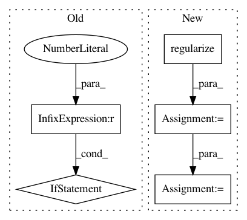

79ab2da38070ed0a972e72c16a44bd266ed6e941,geomstats/geometry/special_orthogonal.py,SpecialOrthogonal,regularize_tangent_vec_at_identity,#SpecialOrthogonal#Any#Any#Any#,186
Before Change
tangent_vec_metric_norm = metric.norm(tangent_vec)
tangent_vec_canonical_norm = gs.linalg.norm(
tangent_vec, axis=1)
if gs.ndim(tangent_vec_canonical_norm) == 1:
tangent_vec_canonical_norm = gs.expand_dims(
tangent_vec_canonical_norm, axis=1)
mask_norm_0 = gs.isclose(tangent_vec_metric_norm, 0.)
mask_canonical_norm_0 = gs.isclose(
tangent_vec_canonical_norm, 0.)
After Change
coef_tangent_vec = gs.einsum(
"...,...i->...i", coef, tangent_vec)
regularized_vec += gs.einsum(
"...,...i->...i",
mask_else_float,
self.regularize(coef_tangent_vec))
coef += mask_0_float
regularized_vec = gs.einsum(
"...,...i->...i", 1. / coef, regularized_vec)
regularized_vec = gs.einsum(
"...,...i->...i", mask_else_float, regularized_vec)
else:
// TODO(nina): Check if/how regularization is needed in nD?
regularized_vec = tangent_vec
In pattern: SUPERPATTERN
Frequency: 3
Non-data size: 5
Instances
Project Name: geomstats/geomstats
Commit Name: 79ab2da38070ed0a972e72c16a44bd266ed6e941
Time: 2020-04-16
Author: ninamio78@gmail.com
File Name: geomstats/geometry/special_orthogonal.py
Class Name: SpecialOrthogonal
Method Name: regularize_tangent_vec_at_identity
Project Name: geomstats/geomstats
Commit Name: 53753337fc53532e2c35ed70c49fef23aa0510f4
Time: 2018-01-28
Author: ninamio78@gmail.com
File Name: tests/test_special_orthogonal_group.py
Class Name: TestSpecialOrthogonalGroupMethods
Method Name: test_group_exp_then_log
Project Name: geomstats/geomstats
Commit Name: 53753337fc53532e2c35ed70c49fef23aa0510f4
Time: 2018-01-28
Author: ninamio78@gmail.com
File Name: tests/test_special_orthogonal_group.py
Class Name: TestSpecialOrthogonalGroupMethods
Method Name: test_exp_then_log